代理式检索增强生成：Agentic RAG 综述
该综述针对传统 RAG 流水线静态线性、难以支撑多步推理与复杂任务管理的问题，系统梳理了将自主 Agent 嵌入 RAG 流水线的 Agentic RAG 范式。论文回顾了从 Naïve RAG、Advanced RAG、Modular RAG、Graph RAG 到 Agentic RAG 的演进，提出基于 agent cardinality、control structure、autonomy 与 knowledge representation 的架构分类法，覆盖单 Agent 路由、多 Agent、层级式、Corrective RAG、Adaptive RAG、图增强（Agent-G、GeAR）与 Agentic Document Workflows 等形态，并归纳 reflection、planning、tool use、multi-agent 四种 agentic 模式与五种工作流模式。关键结论：没有普遍最优的架构，需按任务复杂度选择；检索质量仍是首要瓶颈；Agent 自主性需显式约束；评测应超越输出质量、纳入过程级指标。对团队而言，这是 RAG 架构选型、Agent 编排与评测体系设计的地图式参考。
LLM 依赖静态训练数据，易产生过时与幻觉内容；传统 RAG 虽引入外部检索，但流水线静态线性，难以支持多步推理、深度上下文理解与迭代式回答优化。同时 Agentic RAG 领域本身碎片化：架构多样、术语不一致，此前缺乏沿原则性设计维度组织系统的统一分类法，实践者难以比较与选型。
分析性综述：梳理 RAG 范式演进（Naïve/Advanced/Modular/Graph/Agentic）；归纳 reflection、planning、tool use、multi-agent 四种 agentic 设计模式，以及 prompt chaining、routing、parallelization、orchestrator-workers、evaluator-optimizer 五种工作流模式；提出按 agent cardinality、control structure、autonomy、knowledge representation 四维分类的架构体系（单 Agent 路由、多 Agent、层级式、Corrective RAG、Adaptive RAG、Agent-G、GeAR、ADW），并进行设计权衡比较、应用领域分析与面向实践者的经验提炼。
未在论文中说明
论文指出此前工作聚焦单一框架或特定应用实现，尚无沿原则性设计维度组织 Agentic RAG 系统的统一分类法；本文贡献在于提出该四维分类法、给出跨架构的设计权衡比较（Table 3），并将医疗、金融、教育、企业文档处理等应用案例与面向系统设计者的经验教训（如 Agentic RAG 并非总是默认选择、检索质量仍是瓶颈、自主性需显式约束）系统化。
相关度级别：high
命中能力域：3.1 上下文工程与记忆 | 3.3 Agent 架构与工具使用 | 3.4 多智能体协作 | 3.5 评测与可靠使用
理由：论文直接命中团队多个核心能力域：3.1（RAG/检索增强、上下文迭代精炼、记忆管理开放挑战）、3.3（agentic 模式、工具调用、Corrective/Adaptive 等单 Agent 可靠性机制）、3.4（多 Agent 分工、层级编排、协调与级联失败问题）、3.5（过程级评测方法、成本效率、人在回路治理与实证经验教训）。团队构建知识库问答与 Agent 自动化工具时的架构选型、编排模式选择与评测设计问题，正是该综述的覆盖范围，且其 Lessons Learned 章节明确面向系统设计者与从业者，实用性强。
建议动作：深入精读并做内部分享
arXiv:2501.09136v4 [cs.AI] 2026年4月1日
美国俄亥俄州克利夫兰 克利夫兰州立大学 计算机科学系 a.singh22@csuohio.edu
美国俄亥俄州肯特 肯特州立大学 aehtesha@kent.edu
美国缅因州波特兰 东北大学 Roux 研究所 Khoury 计算机科学学院 t.talaeikhoei@northeastern.edu
美国马萨诸塞州波士顿 东北大学 Khoury 计算机科学学院
kumar.sak@northeastern.edu
人工智能研究中心 阿哥德大学（UiA） Jon Lilletuns vei 9，4879 格里姆斯塔德，挪威
th.vasilakos@gmail.com
大语言模型（Large Language Models, LLMs）通过实现类人的文本生成与自然语言理解，显著推动了人工智能的发展。然而，其对静态训练数据的依赖限制了其响应动态、实时查询的能力，导致输出过时或不准确。检索增强生成（Retrieval-Augmented Generation, RAG）应运而生，通过集成实时数据检索来增强 LLM，从而提供与上下文相关且最新的响应。尽管前景可观，传统 RAG 系统仍受限于静态工作流，缺乏多步推理与复杂任务管理所需的适应性。智能体检索增强生成（Agentic Retrieval-Augmented Generation, Agentic RAG）通过将自主 AI 智能体嵌入 RAG 流水线，突破了上述局限。这些智能体利用智能体设计模式——反思（reflection）、规划（planning）、工具调用（tool use）与多智能体协作（multi-agent collaboration）——来动态管理检索策略、迭代式地细化上下文理解，并通过从顺序步骤到自适应协作等明确定义的运行结构来调整工作流。这种融合使 Agentic RAG 系统能够在多样化应用中提供无与伦比的灵活性、可扩展性与上下文感知能力。本文对 Agentic RAG¹ 系统进行了分析性综述。本文追溯了 RAG 范式的演进，基于智能体数量（agent cardinality）、控制结构、自主性与知识表示提出了一套原则性的 Agentic RAG 架构分类体系，并对现有框架之间的设计权衡进行了比较分析。本综述进一步考察了医疗、金融、教育与企业文档处理等领域的实际应用，并为系统设计者与从业者提炼了实用的经验教训。最后，本文指出了与评估、协调、记忆管理、效率及治理相关的关键开放性研究挑战，并勾勒了未来研究的方向。
关键词 大语言模型（LLMs）· 人工智能（AI）· 自然语言理解 · 检索增强生成（RAG）· Agentic RAG · 自主 AI 智能体 · 反思 · 规划 · 工具调用 · 多智能体协作 · 智能体模式 · 上下文理解 · 动态适应性 · 可扩展性 · 实时数据检索 · Agentic RAG 分类体系 · 医疗应用 · 金融应用 · 教育应用 · 伦理 AI 决策 · 性能优化 · 多步推理
1 GitHub 链接：https://github.com/asinghcsu/AgenticRAG-Survey
尽管关注度迅速增长，智能体检索增强生成（Agentic RAG）领域仍然碎片化，存在多样化的架构、不一致的术语以及有限的比较性理解。现有工作大多聚焦于单个框架或面向特定应用的实现，目前尚无统一的分类体系能够按照基于原则的设计维度对 Agentic RAG 系统加以组织。
本文提出了一项旨在对这一新兴领域进行结构化梳理的分析性综述。文中回顾了 RAG 范式的演进，包括朴素 RAG、模块化 RAG 和基于图的 RAG [17]，以及它们向智能体系统的转变。本文依据智能体基数、控制结构、自主性与知识表示，提出了一套基于原则的 Agentic RAG 架构分类体系，并随后对设计权衡进行了比较分析。本综述考察了 Agentic RAG 在医疗健康 [18, 19]、金融和教育 [20] 等领域的应用，为系统设计者提炼了实践经验，并识别出开放的研究挑战以指导未来工作。
本文的结构如下：第 2 节介绍 RAG 及其演进，并着重指出传统方法的局限性。第 3 节阐述智能体智能与智能体模式的原理。第 4 节阐述智能体工作流模式。第 5 节给出 Agentic RAG 系统的分类体系，包括单智能体、多智能体和基于图的框架。第 6 节对 Agentic RAG 框架进行比较分析。第 7 节考察 Agentic RAG 的应用，第 8 节讨论实现工具与框架。第 9 节对 Agentic RAG 框架进行比较分析。第 10 节讨论经验教训与实践指导。第 11 节聚焦于基准测试（benchmark）与数据集，第 12 节讨论开放的研究问题与未来挑战，第 13 节以 Agentic RAG 系统的未来发展方向作为总结。
检索增强生成（RAG）代表了人工智能领域的一项重大进展，它将大语言模型（LLMs）的生成能力与实时数据检索相结合。尽管 LLMs 在自然语言处理方面已展现出卓越的能力，但其对静态预训练数据的依赖常常导致回答过时或不完整。RAG 通过从外部来源动态检索相关信息并将其融入生成过程，解决了这一局限，从而能够生成上下文准确且最新的输出。
2
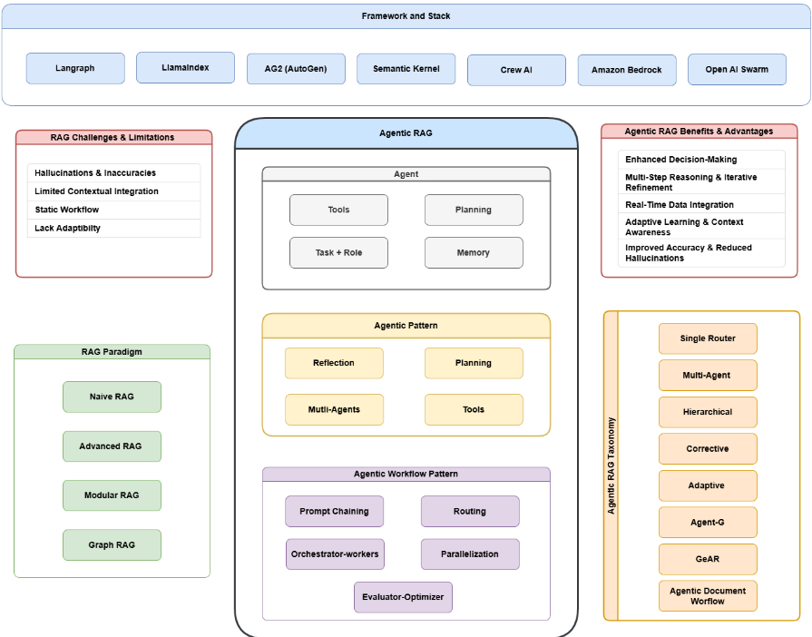
RAG 系统的架构集成了三个主要组件（图2）：
检索增强生成（Retrieval-Augmented Generation, RAG）领域已发生显著演进，以应对真实世界应用日益增长的复杂性——在这些应用中，上下文准确性、可扩展性和多步推理至关重要。最初简单的基于关键词的检索，已逐步发展为精密复杂、模块化且自适应的系统，这类系统能够集成多样化的数据源与自主决策过程。这一演进凸显了 RAG 系统对高效且有效处理复杂查询的日益增长的需求。
3
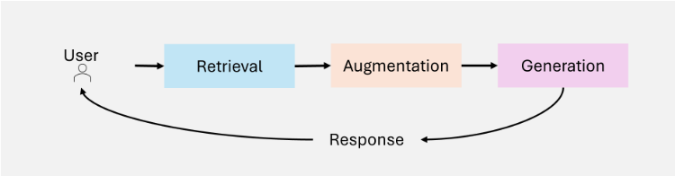
本节考察 RAG 范式的演进历程，介绍各个关键发展阶段——Naïve RAG、Advanced RAG、Modular RAG、Graph RAG 和 Agentic RAG——及其各自的特征、优势与局限性。通过理解这些范式的演进，读者可以领会检索与生成能力方面取得的进展，以及它们在各个领域中的应用。
Naïve RAG [21] 代表了检索增强生成（RAG）的基础性实现。图 3 展示了 Naïve RAG 简单的检索-读取（retrieve-read）工作流，其重点是基于关键词的检索和静态数据集。这类系统依赖简单的基于关键词的检索技术，例如 TF-IDF 和 BM25，从静态数据集中获取文档。检索到的文档随后被用于增强语言模型的生成能力。
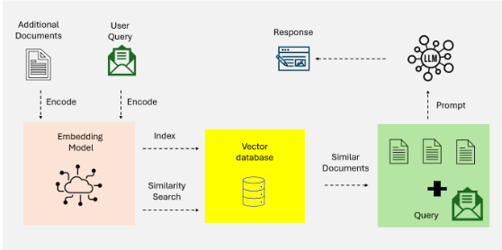
Naïve RAG 的特点是简单且易于实现，使其适用于涉及事实型查询且上下文复杂度较低的任务。然而，它存在若干局限性：
尽管存在这些局限性，Naïve RAG 系统仍为检索与生成的集成提供了关键的概念验证，为更复杂的范式奠定了基础。
Advanced RAG [21] 系统在 Naïve RAG 局限性的基础上加以改进，融入了语义理解和增强的检索技术。图 4 突出展示了 Advanced RAG 在检索方面的语义增强以及其迭代的、上下文感知的流水线。这些系统利用诸如稠密段落检索（Dense Passage Retrieval, DPR）之类的稠密检索模型以及神经排序算法来提升检索精度。
4
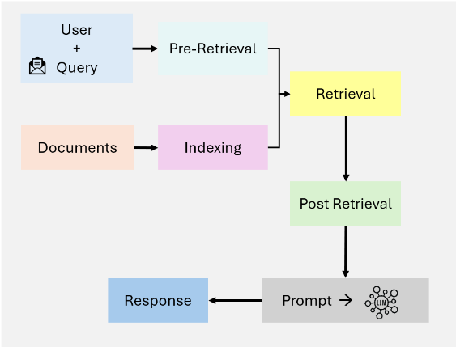
Advanced RAG 的关键特性包括：
这些进展使 Advanced RAG 适用于需要高精度和细致理解的应用，例如研究综合和个性化推荐。然而，计算开销和可扩展性受限等挑战依然存在，尤其是在处理大规模数据集或多步查询时。
模块化 RAG（Modular RAG）[21] 代表了 RAG 范式的最新演进，强调灵活性与可定制性。这类系统将检索与生成流水线分解为独立且可复用的组件，从而实现面向特定领域的优化与任务适应性。图 5 展示了这种模块化架构，呈现了混合检索策略、可组合的流水线以及外部工具集成。
Modular RAG 的关键创新包括：
例如，一个面向金融分析的 Modular RAG 系统可以通过 API 获取实时股价，利用稠密检索分析历史趋势，并通过定制化的语言模型生成可操作的投资洞察。这种模块化与可定制性使 Modular RAG 非常适合复杂的多领域任务，兼具可扩展性与精确性。
5
Graph RAG [17] 通过集成基于图的数据结构扩展了传统的检索增强生成（RAG）系统，如图 6 所示。这些系统利用图数据中的关系与层次结构来增强多跳推理和上下文充实。通过引入基于图的检索，Graph RAG 能够产生更丰富、更准确的生成式输出，尤其适用于需要关系理解的任务。
Graph RAG 的特点在于其能够：
然而，Graph RAG 也存在一些局限性：
Graph RAG 非常适合医疗诊断、法律研究以及其他需要对结构化关系进行推理的应用领域。
Agentic RAG 通过引入能够进行动态决策与工作流优化的自主智能体，代表了一种范式转变。与静态系统不同，Agentic RAG 采用迭代精炼与自适应检索策略来处理复杂、实时以及多领域的查询。这一范式在利用检索与生成过程模块化特性的同时，引入了基于智能体的自主性。
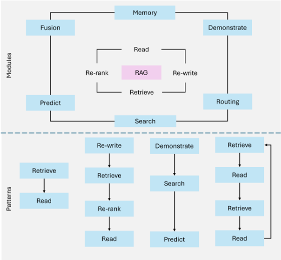
6
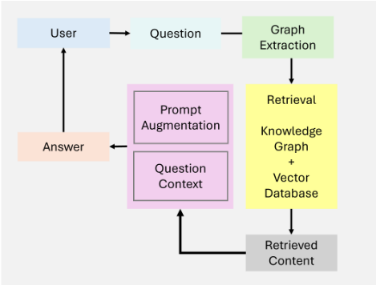
Agentic RAG 的主要特点包括：
尽管取得了诸多进展，Agentic RAG 仍面临一些挑战：
Agentic RAG 在客户支持、金融分析以及自适应学习平台等领域表现出色，在这些领域中，动态适应性与上下文精确性至关重要。
传统检索增强生成（Retrieval-Augmented Generation, RAG）系统通过集成实时数据检索，显著扩展了大语言模型（Large Language Models, LLMs）的能力。然而，这些系统在复杂的真实世界应用中仍然面临阻碍其有效性的关键挑战。最显著的局限集中在上下文整合、多步推理以及可扩展性与延迟问题等方面。
即使 RAG 系统成功检索到相关信息，它们也常常难以将这些信息无缝地融入生成的响应之中。检索流水线的静态特性以及有限的上下文感知能力，导致输出内容碎片化、不一致或过于笼统。
示例：诸如“阿尔茨海默病研究的最新进展及其对早期治疗有何启示？”这样的查询，可能会检索到相关的研究论文和医学指南。然而，传统 RAG 系统往往无法将这些研究发现综合成一个连贯的解释，从而将新疗法与具体的患者场景联系起来。类似地，对于“干旱地区小规模农业的最佳可持续实践是什么？”这样的查询，传统系统可能会检索到关于一般性农业方法的文档，却忽略了针对干旱环境量身定制的关键可持续实践。
7
| Paradigm | Key Features | Strengths |
|---|---|---|
| • Keyword-based retrieval (e.g., TF-IDF, BM25) | • Simple and easy to implement • Suitable for fact-based queries | Naïve RAG |
| • Dense retrieval models (e.g., DPR) • Neural ranking and re-ranking • Multi-hop retrieval | • High precision retrieval • Improved contextual relevance | Advanced RAG |
| • Hybrid retrieval (sparse and dense) • Tool and API integration • Composable, domain-specific pipelines | • High flexibility and customization • Suitable for diverse applications • Scalable | Modular RAG |
| • Integration of graph-based structures • Multi-hop reasoning • Contextual enrichment via nodes | • Relational reasoning capabilities • Mitigates hallucinations • Ideal for structured data tasks | Graph RAG |
| • Autonomous agents • Dynamic decision-making • Iterative refinement and work- flow optimization | • Adaptable to real-time changes • Scalable for multi-domain tasks • High accuracy | Agentic RAG |
| Paradigm | Key Features | Strengths |
许多现实世界的查询需要迭代式或多跳推理（multi-hop reasoning）——即在多个步骤中检索并综合信息。传统 RAG 系统往往难以根据中间洞察或用户反馈来优化检索，导致回答不完整或支离破碎。
示例：诸如“欧洲可再生能源政策中有哪些经验教训可以应用于发展中国家，其潜在经济影响又如何？”这样的复杂查询，需要协调多种类型的信息，包括政策数据、面向发展中地区的情境化处理以及经济分析。传统 RAG 系统通常无法将这些彼此独立的要素串联成一个连贯的回答。
随着外部数据源数量的增长，对大型数据集进行查询和排序的计算开销日益增大。这会导致显著的延迟，从而削弱系统在实时应用中提供及时响应的能力。
示例：在金融分析或实时客户支持等对时间敏感的场景中，查询多个数据库或处理大型文档集所造成的延迟可能会影响系统的整体效用。例如，在高频交易过程中检索市场趋势的延迟可能导致错失机会。
传统检索增强生成（RAG）系统因其静态的工作流程和有限的适应性，往往难以处理动态的多步推理和复杂的现实世界任务。这些局限性推动了智能体智能（agentic intelligence）的融入，从而催生了 Agentic RAG。通过引入能够执行动态决策、迭代推理和自适应检索策略的自主 Agent，Agentic RAG 在早期范式模块化的基础上进行构建，同时克服了其固有的局限。这一演进使得更复杂的多领域任务能够以更高的精度和更强的上下文理解能力得到处理，从而将 Agentic RAG 确立为下一代人工智能（AI）应用的基石。特别是，Agentic RAG 系统通过优化的工作流程降低延迟，并通过迭代方式优化输出，从而切实应对了历来阻碍传统 RAG 可扩展性与有效性的种种挑战。
8
智能体智能（Agentic Intelligence）构成了智能体检索增强生成（Agentic RAG）系统的基础，使其能够超越传统 RAG 静态且被动响应的固有特性。通过集成具备动态决策、迭代推理与协作式工作流能力的自主 Agent，Agentic RAG 系统展现出更强的适应性与精确性。本节探讨支撑智能体智能的核心原理。
AI Agent 的组成部分。本质上，一个 AI Agent 由以下部分构成（图 7）：
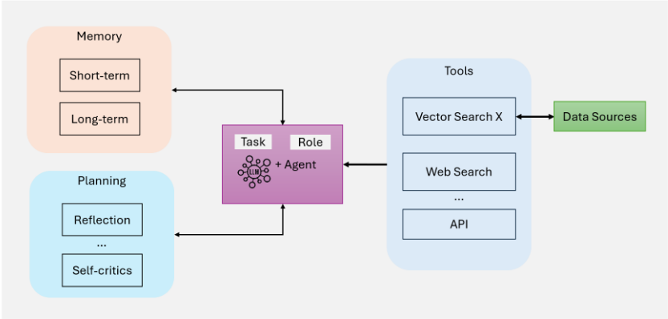
智能体模式（Agentic Patterns）[26, 27] 提供了结构化的方法论，用于指导 Agentic RAG 系统中 Agent 的行为。这些模式使 Agent 能够动态地适应、规划与协作，从而确保系统能够以精确性和可扩展性处理复杂的现实世界任务。四种关键模式支撑着智能体工作流：
反思（Reflection）是智能体工作流中的一种基础性设计模式，它使 Agent 能够迭代地评估并改进自身的输出。通过引入自我反馈机制，Agent 能够识别并解决错误、不一致之处以及有待改进的方面，从而提升其在代码生成、文本生成和问答等任务上的表现（如图 8 所示）。在实际应用中，反思的做法是提示 Agent 从正确性、风格和效率等方面对其输出进行批判性评估，然后将这些反馈融入后续迭代之中。单元测试或网络搜索等外部工具可以通过验证结果并凸显不足之处，进一步增强这一过程。
9
在多智能体（multi-agent）系统中，反思可以涉及不同的角色分工，例如由一个 Agent 生成输出，而由另一个 Agent 对其进行批判性评估，从而促进协作式改进。例如，在法律研究领域，Agent 可以通过重新评估检索到的判例法来迭代地完善回答，从而确保准确性与全面性。在 Self-Refine [28]、Reflexion [29] 和 CRITIC [24] 等研究中，反思已展现出显著的性能提升。
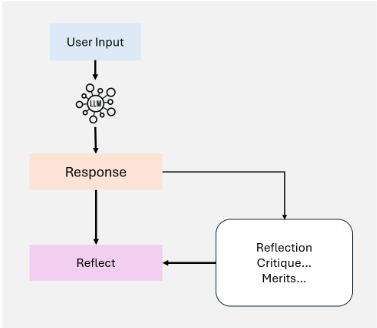
规划（Planning）[25] 是 Agentic 工作流中的一项关键设计模式，它使 Agent 能够自主地将复杂任务分解为更小、更易于管理的子任务。如图 9a 所示，这种能力对于动态和不确定场景下的多跳推理与迭代式问题求解至关重要。
通过利用规划，Agent 能够动态地确定实现更大目标所需的步骤序列。这种适应性使 Agent 能够处理无法预先定义的任务，从而确保决策的灵活性。尽管功能强大，与反思（Reflection）这类确定性工作流相比，规划可能产生较难预测的结果。规划尤其适用于需要动态适应、而预定义工作流难以胜任的任务。随着该技术的不断成熟，其推动跨领域创新应用的潜力将持续增长。
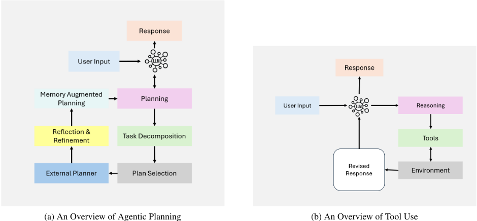
10
工具调用（Tool Use）使 Agent 能够通过与外部工具、API 或计算资源交互来扩展自身能力，如图 9b 所示。这种模式使 Agent 能够收集信息、执行计算，并操作超出其预训练知识范围的数据。通过将工具动态集成到工作流中，Agent 能够适应复杂任务，并提供更准确、更具上下文相关性的输出。
现代智能体工作流在多种应用中采用了工具调用，包括信息检索、计算推理以及与外部系统的交互。随着 GPT-4 函数调用能力以及能够管理大量工具访问的系统等技术的进步，这一模式的实现已显著演进。这些进展促成了复杂的工作流，使 Agent 能够针对给定任务自主选择并执行最相关的工具。
尽管工具调用显著增强了智能体工作流，但在优化工具选择方面仍存在挑战，尤其是在可用选项数量众多的场景中。受检索增强生成（RAG）启发的技术，例如基于启发式的选择方法，已被提出用于解决这一问题。
多智能体协作 [30] 是智能体工作流中的一种关键设计模式，它支持任务专业化与并行处理。各 Agent 之间相互通信并共享中间结果，从而确保整体工作流保持高效且连贯。通过将子任务分配给专门化的 Agent，这一模式提升了复杂工作流的可扩展性与适应性。多智能体系统使开发者能够将复杂的任务分解为更小、更易于管理的子任务，并将其分配给不同的 Agent。这种方法不仅提升了任务性能，还为管理复杂交互提供了一个稳健的框架。每个 Agent 都以自己的记忆和工作流运行，其中可以包括工具调用、反思或规划，从而实现动态且协作的问题求解（见图 10）。
尽管多智能体协作具有巨大潜力，但与反思和工具调用等更为成熟的工作流相比，它是一种可预测性较低的设计模式。尽管如此，AutoGen、Crew AI 和 LangGraph 等新兴框架正在为实现有效的多智能体解决方案提供新的途径。
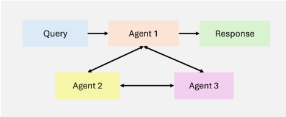
这些设计模式构成了 Agentic RAG 系统取得成功的基础。通过对工作流进行结构化——从简单的顺序步骤到更具适应性、协作性的流程——这些模式使系统能够动态调整其检索与生成策略，以应对现实环境中多样且不断变化的需求。借助这些模式，Agent 能够处理迭代式、上下文感知的任务，而这类任务显著超越了传统 RAG 系统的能力。
Agentic 工作流模式 [13, 31] 对基于 LLM 的应用进行结构化，以优化性能、准确性和效率。不同的方法适用于不同的任务复杂度和处理需求。
提示链（Prompt Chaining）[13, 31] 将一个复杂任务分解为多个步骤，每个步骤都建立在先前步骤的基础之上。这种结构化方法通过在向前推进之前先简化每个子任务来提高准确性。然而，由于需要顺序处理，它可能会增加延迟。
11
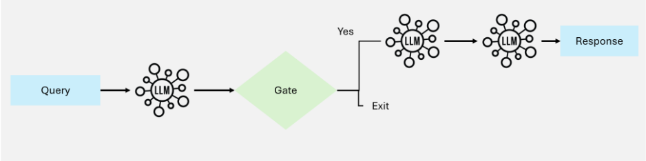
何时使用：当任务可以被分解为固定的子任务、且每个子任务都对最终输出有所贡献时，这种工作流最为有效。在逐步推理能够提升准确性的场景中，它尤其有用。
路由（Routing）[13, 31] 涉及对输入进行分类，并将其引导至相应的专用提示或处理流程。这种方法确保不同的查询或任务被分别处理，从而提高效率和响应质量。
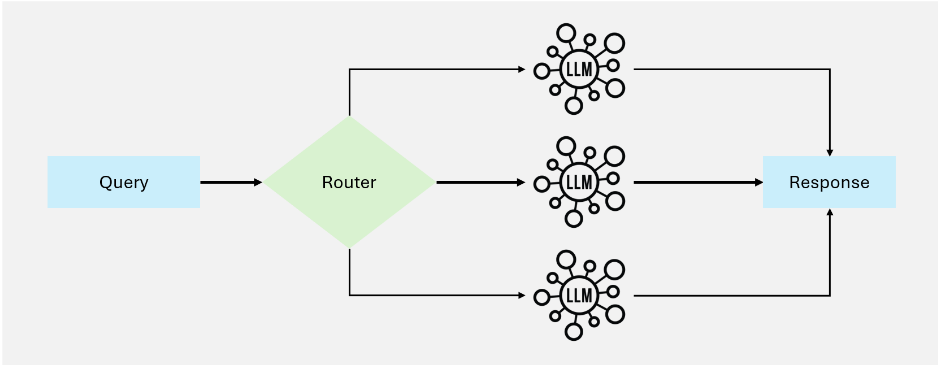
何时使用：适用于不同类型的输入需要不同处理策略的场景，可确保每一类输入都获得优化的性能。
12
并行化 [13, 31] 将任务划分为可同时运行的独立进程，从而降低延迟并提高吞吐量。它可以分为分段（sectioning，独立子任务）和投票（voting，多个输出以提高准确性）两类。
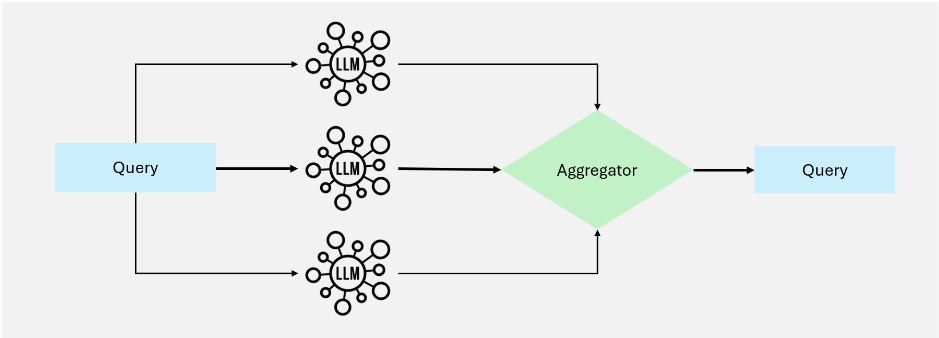
何时使用：当任务可以独立执行以提升速度，或当多个输出能够提高置信度时，该模式非常有用。
该工作流 [13, 31] 的特点是采用一个中央编排器（orchestrator）模型，由其动态地将任务分解为子任务，分配给专门化的工作者（worker）模型，并对结果进行汇总。与并行化不同，它能够适应不同的输入复杂度。
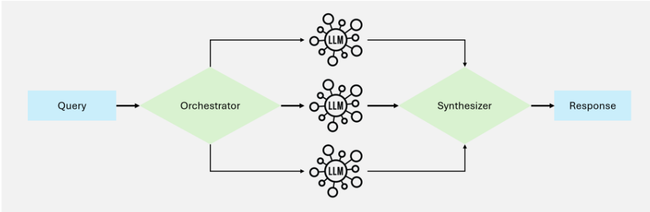
何时使用：最适合需要动态分解与实时适应、且子任务并非预先定义的任务。
13
评估器-优化器（evaluator-optimizer）[13, 31] 工作流通过生成初始输出，并基于评估模型的反馈对其进行细化，从而迭代地改进内容。
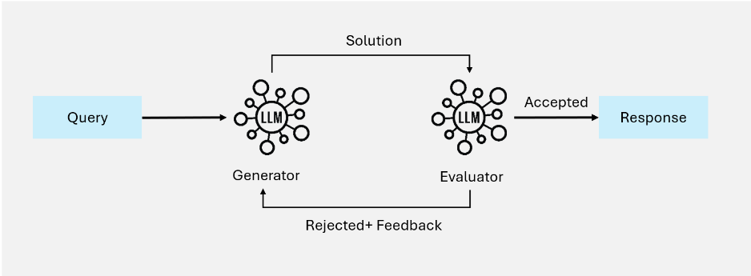
适用场景：当迭代细化能够显著提升响应质量时尤为有效，特别是在存在明确评估标准的情况下。
智能体检索增强生成（Agentic RAG）系统可以基于其复杂度和设计原则划分为不同的架构框架。这些框架包括单智能体架构、多智能体系统和分层智能体架构。每种框架都经过专门设计，以应对特定挑战并针对多样化的应用优化性能。本节对这些架构进行了详细的分类，重点阐述其特点、优势和局限性。
单智能体 Agentic RAG：[32] 充当集中式决策系统，由单个智能体管理信息的检索、路由与整合（如图 16 所示）。这种架构通过将这些任务整合到一个统一的智能体中，从而简化了系统，使其在工具或数据源数量有限的部署场景中尤为有效。
14
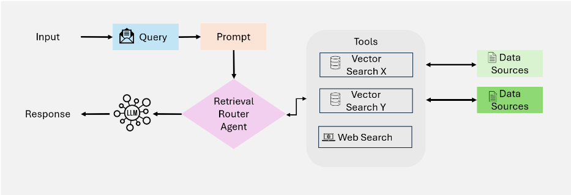
15
提示：您能告诉我我的订单的配送状态吗？
集成响应：“您的包裹目前正在运输途中，预计将于明晚送达。UPS 的实时追踪信息显示，包裹目前位于区域配送中心。”
多智能体 RAG [32] 代表了单智能体架构的一种模块化且可扩展的演进，旨在通过利用多个专业化智能体（如图 17 所示）来处理复杂的工作流和多样化的查询类型。该系统不再依赖单一智能体来管理所有任务——推理、检索和响应生成——而是将职责分配给多个智能体，每个智能体都针对特定角色或数据源进行了优化。
检索过程并行执行，从而能够高效处理多样化的查询类型。
16
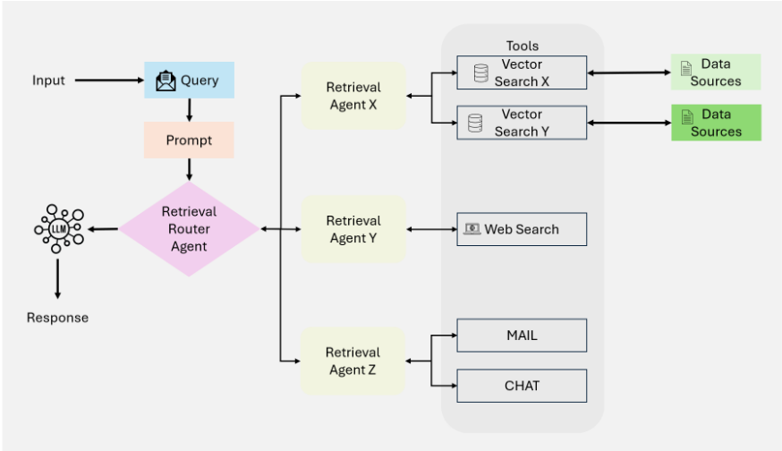
17
提示：欧洲采用可再生能源在经济和环境方面会产生哪些影响？
综合响应：“根据欧盟（EU）政策报告，欧洲采用可再生能源在过去十年间使温室气体排放减少了20%。在经济方面，可再生能源投资创造了约120万个就业岗位，其中太阳能和风能领域增长显著。近期的学术研究还强调了在电网稳定性和储能成本方面可能存在的权衡。”
分层 Agentic RAG：[15] 中的系统采用结构化、多层级的信息检索与处理方法，如图 18 所示，同时提升了效率与战略决策能力。各 Agent 按层级组织，较高层级的 Agent 负责监督并指挥较低层级的 Agent。这种结构支持多级决策，确保查询由最合适的资源来处理。
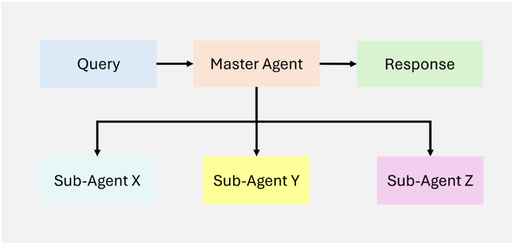
18
提示：鉴于当前可再生能源的市场趋势，最佳的投资选择有哪些？
综合响应：“根据当前市场数据，可再生能源股票在过去一个季度中实现了15%的增长，这得益于政府支持性政策和投资者兴趣的提升。分析师认为，尤其是风能和太阳能领域可能保持持续的增长势头，而绿氢等新兴技术则呈现出风险适中但潜在回报较高的特点。”
Corrective RAG：引入了对检索结果进行自我纠正的机制，如图 19 所示，从而提升文档利用率并改善响应生成质量。通过将智能体嵌入工作流程，Corrective RAG [33] [34] 确保对上下文文档和响应进行迭代式精炼，最大限度地减少错误并最大化相关性。
Corrective RAG 的核心思想：Corrective RAG 的核心原则在于其能够动态评估检索到的文档、执行纠正操作并精炼查询，从而提升所生成响应的质量。Corrective RAG 按如下方式调整其方法：
19
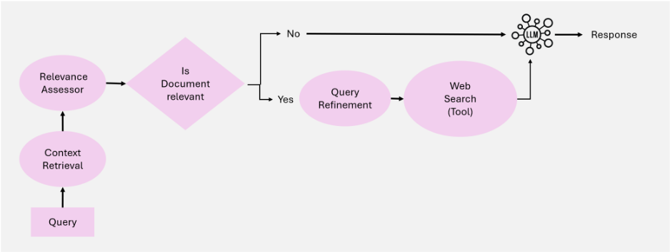
20
综合回答：“生成式人工智能领域的最新研究成果凸显了扩散模型、面向文本到视频任务的强化学习以及大规模模型训练优化技术等方面的进展。更多细节请参阅发表于 NeurIPS 2024 和 AAAI 2025 的研究。”
自适应检索增强生成（Adaptive RAG）[35] 通过根据输入查询的复杂程度动态调整查询处理策略，提升了大语言模型（LLM）的灵活性与效率。与静态检索工作流不同，Adaptive RAG [36] 采用分类器来评估查询复杂度，并确定最合适的处理方式，范围涵盖从单步检索到多步推理，甚至对于简单直接的查询可以完全绕过检索，如图 20 所示。
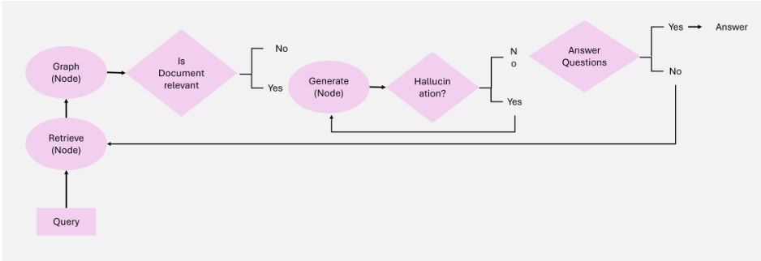
Adaptive RAG 的核心思想：Adaptive RAG 的核心原理在于其能够根据查询的复杂程度动态定制检索策略。Adaptive RAG 按如下方式调整其处理方法：
21
工作流：Adaptive RAG 系统建立在三个主要组件之上：
22
提示：我的包裹为什么延迟了，我有哪些替代方案？
整合响应：“由于您所在地区出现恶劣天气，您的包裹出现延迟。包裹目前位于当地配送中心，将在2天内送达。或者，您也可以选择到该设施自取。”
Agent-G [8]：提出了一种新颖的智能体架构，将图知识库与非结构化文档检索相集成。通过结合结构化与非结构化数据源，该框架以更强的推理能力和更高的检索准确性增强了检索增强生成（RAG）系统。如图 21 所示，它采用模块化检索器库（modular retriever banks）、动态智能体交互和反馈循环来确保高质量的输出。
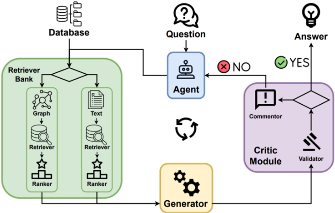
23
Agent-G 的核心思想：Agent-G 的核心原则在于其能够将检索任务动态分配给专门的智能体，同时利用图知识库和文本文档这两类资源。Agent-G 按如下方式调整其检索策略：
工作流程：Agent-G 系统建立在四个主要组件之上：
24
提示：2型糖尿病的常见症状有哪些？它们与心脏病有什么关系？
综合响应：“2型糖尿病的症状包括口渴加剧、尿频和疲劳。研究表明，糖尿病与心脏病之间存在50%的相关性，主要通过肥胖和高血压等共同风险因素产生关联。”
GeAR [37]：引入了一种 Agentic 框架，通过融合基于图的检索机制来增强传统的检索增强生成（Retrieval-Augmented Generation, RAG）系统。通过利用图扩展技术和基于 Agent 的架构，GeAR 应对了多跳检索场景中的挑战，提升了系统处理复杂查询的能力，如图 22 所示。
GeAR 的核心思想 GeAR 通过两项主要创新提升了 RAG 的性能：
工作流程：GeAR 系统通过以下组件运行：
25
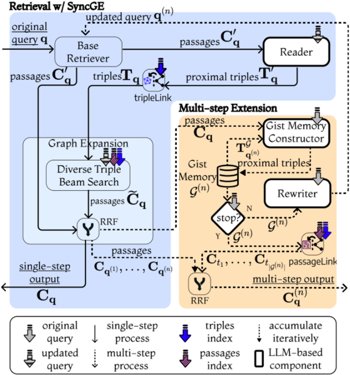
26
提示：哪位作家影响了 J.K. 罗琳的导师？
综合响应：“J.K. 罗琳的导师 [导师姓名] 深受 [作者姓名] 的影响，后者以其 [代表作品或流派] 而闻名。这一关联凸显了文学史上层层相承的关系——有影响力的思想往往历经数代作家传承延续。”
智能体文档工作流（Agentic Document Workflows, ADW）[38] 通过实现端到端的知识工作自动化，扩展了传统的检索增强生成（RAG）范式。这些工作流对复杂的以文档为中心的流程进行编排，将文档解析、检索、推理和结构化输出与智能体相集成（见图 23）。ADW 系统通过维护状态、协调多步骤工作流以及对文档应用领域特定逻辑，解决了智能文档处理（IDP）和 RAG 的局限性。
27
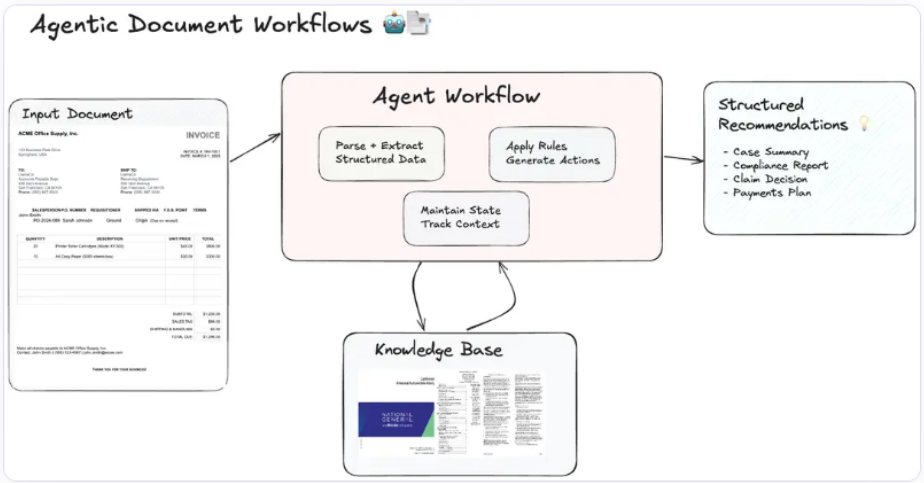
提示词：基于所提交的发票及相关供应商合同条款，生成一份付款建议报告。
Response: 综合响应：“发票 INV-2025-045（金额 $15,000.00）已处理完毕。若在 2025-04-10 之前付款，可享受 2% 的提前付款折扣，应付金额将降至 $14,700.00。由于小计金额超过 $10,000.00，已适用 5% 的大宗订单折扣。建议批准提前付款，以节省 2% 的费用，并确保为即将到来的项目阶段及时分配资金。”
28
表 2 对三种架构框架进行了全面的对比分析：传统检索增强生成（RAG）、Agentic RAG 以及 Agentic 文档工作流（Agentic Document Workflows, ADW）。该分析突出了它们各自的优势、劣势以及最适用的场景，为其在多样化用例中的适用性提供了宝贵的见解。
| Feature | Traditional RAG | Agentic RAG | Agentic Document Workflows (ADW) |
|---|---|---|---|
| Focus | Isolated retrieval and generation tasks | Multi-agent collaboration and reasoning | Document-centric end-to-end workflows |
| Context Maintenance | Limited | Enabled through memory modules | Maintains state across multi-step workflows |
| Dynamic Adaptability | Minimal | High | Tailored to document workflows |
| Workflow Orchestration | Absent | Orchestrates multi-agent tasks | Integrates multi-step document processing |
| Use of External Tools/APIs | Basic integration (e.g., retrieval tools) | Extends via tools like APIs and knowledge bases | Deeply integrates business rules and domain-specific tools |
| Scalability | Limited to small datasets or queries | Scalable for multi-agent systems | Scales for multi-domain enterprise workflows |
| Complex Reasoning | Basic (e.g., simple Q&A) | Multi-step reasoning with agents | Structured reasoning across documents |
| Primary Applications | QA systems, knowledge retrieval | Multi-domain knowledge and reasoning | Contract review, invoice processing, claims analysis |
| Strengths | Simplicity, quick setup | High accuracy, collaborative reasoning | End-to-end automation, domain-specific intelligence |
| Challenges | Poor contextual understanding | Coordination complexity | Resource overhead, domain standardization |
| Feature | Traditional RAG | Agentic RAG | Agentic Document Workflows (ADW) |
该对比分析凸显了从传统 RAG 到 Agentic RAG、再到 Agentic 文档工作流（ADW）的演进轨迹。传统 RAG 为基础任务提供了简单性与易部署性，而 Agentic RAG 则通过多智能体协作引入了更强的推理能力和可扩展性。ADW 在这些进展的基础上，提供了稳健的、以文档为中心的工作流，从而促进端到端自动化以及与特定领域流程的集成。理解每种框架的优势与局限性，对于选择最合适的架构以满足特定的应用需求和运营要求至关重要。
Agentic 检索增强生成（RAG）系统已在多种领域展现出变革性潜力。通过结合实时数据检索、生成能力与自主决策，这些系统能够应对复杂、动态和多模态的挑战。本节探讨 Agentic RAG 的关键应用，深入剖析这些系统如何塑造客户支持、医疗健康、金融、教育、法律工作流以及创意产业等行业。
Agentic RAG 系统正在彻底变革客户支持，它能够实时、结合上下文地解答用户查询。传统的聊天机器人和虚拟助手通常依赖静态知识库，导致回复泛泛而过时。相比之下，Agentic RAG 系统能够动态检索最相关的信息，适应用户的上下文，并生成个性化的回复。
例如，Twitch 利用基于 Amazon Bedrock 的 RAG 智能体工作流来简化广告销售流程。该系统动态检索广告主数据、历史广告活动表现以及受众人口统计特征，以生成详细的广告提案，显著提升了运营效率。
29
在医疗保健领域，将患者特异性数据与最新医学研究相整合对于做出明智的决策至关重要。Agentic RAG 系统通过检索实时临床指南、医学文献和患者病史来实现这一点，从而辅助临床医生进行诊断和治疗规划。
Agentic RAG 系统已被应用于生成患者病例摘要。例如，通过整合电子健康记录（EHR）与最新医学文献，系统能够生成全面的摘要，帮助临床医生更快地做出更明智的决策。
Agentic RAG 系统正在重新定义法律工作流的开展方式，为快速文档分析与决策制定提供了工具。
法律领域的 Agentic RAG 系统能够分析合同、提取关键条款并识别潜在风险。通过将语义搜索能力与法律知识图谱相结合，它将繁琐的合同审查流程自动化，确保合规性并降低风险。
Agentic RAG 系统正在变革金融行业，为投资决策、市场分析和风险管理提供实时洞察。这些系统整合实时数据流、历史趋势和预测建模，以生成可操作的输出结果。
在汽车保险领域，Agentic RAG 可以自动化理赔处理流程。例如，通过检索保单详情并将其与事故数据相结合，它能够生成理赔建议，同时确保符合监管要求。
30
教育是 Agentic RAG 系统正取得长足进展的另一个领域。这些系统通过生成根据学习者进度和偏好量身定制的讲解、学习材料和反馈，实现自适应学习。
在高等教育领域，Agentic RAG 已被用于通过综合来自多个来源的关键发现来协助研究人员。例如，研究人员查询“量子计算有哪些最新进展？”时，会收到一份附有参考文献的简明摘要，从而提升其工作的质量和效率。
图增强智能体 RAG（Graph-Enhanced Agentic RAG, GEAR）将图结构与检索机制相结合，使其在相互关联的数据源至关重要的多模态工作流中尤为有效。
GEAR 能够为营销活动实现文本、图像和视频的合成。例如，查询“环保产品领域有哪些新兴趋势？”即可生成一份详细报告，其中融入了客户偏好、竞争对手分析以及多媒体内容。
Agentic RAG 系统的应用横跨众多行业，充分展现了其通用性与变革潜力。从个性化客户支持到自适应教育，再到图增强的多模态工作流，这些系统能够应对复杂、动态且知识密集型的挑战。通过融合检索、生成与智能体智能，Agentic RAG 系统正在为下一代 AI 应用铺平道路。
Agentic 检索增强生成（Agentic Retrieval-Augmented Generation, RAG）系统代表了检索、生成与智能体智能相融合的一项重大演进。这些系统通过集成决策制定、查询重构与自适应工作流，扩展了传统 RAG 的能力。以下工具与框架为开发 Agentic RAG 系统提供了强有力的支持，能够满足现实世界应用的复杂需求。
31
称为 AutoGen [50, 51]）在多智能体协作方面表现出色，为代码生成、工具执行和决策制定提供了先进支持。
表 2 从关键维度对传统 RAG 与智能体化 RAG（Agentic RAG）进行了比较。传统 RAG 为基本任务提供了简单性，而智能体化 RAG 则通过多智能体协作引入了更强的推理能力与可扩展性。理解二者各自的优势与局限，对于选择能够满足特定应用需求的架构至关重要。
基于分类学驱动的分析揭示了超越特征层面差异的关键权衡。单智能体架构偏向简单性与低延迟，但在多领域推理方面存在困难。多智能体系统通过并行性提升了可扩展性，但以协调开销为代价。分层架构与纠错架构通过战略性监督增强了可靠性，但会带来更高的延迟。基于图的系统能够实现结构化的关系推理，但同时也引入了对知识质量的依赖。表 3 将这些架构映射到分类学维度与设计权衡。
基于对范式、分类学以及实际应用案例的分析，本节提炼出用于设计、评估和部署智能体化检索增强生成（Agentic RAG）系统的实用见解。
不应将 Agentic RAG 视为传统 RAG 的通用替代方案。尽管它具备更出色的适应性和多步推理能力，但同时也会引入协调复杂性、延迟和计算成本。对于简单的事实检索或范围明确的查询，模块化 RAG 流水线能够以更低的开销提供足够的性能。实践者应根据任务复杂度，有选择地采用智能体化设计。
不同的架构会导致根本不同的系统行为。单智能体系统追求简洁；多智能体系统能够实现并行处理，但需要编排；分层架构则以复杂性为代价引入了监督机制。架构决策隐式地编码了关于控制、信任与容错能力的假设。纠错型工作流提升了准确性，但增加了延迟；而自适应架构则以正确性保证换取响应速度。
32
| Dimension | Single-Agent RAG | Multi-Agent RAG | Hierarchical / Corrective RAG | Graph-Based / Document-Centric RAG |
|---|---|---|---|---|
| Agent Cardinality | Single | Multiple | Multiple (tiered) | Multiple |
| Control Structure | Centralized | Flat | Hierarchical / evaluator-based | Adaptive / structured |
| Knowledge Representation | Unstructured | Unstructured or hybrid | Unstructured or hybrid | Graph-based or document-centric |
| Knowledge Dependency | Low | Moderate | Moderate | High, sensitive to graph quality |
| Reasoning Mode | Implicit, LLM-driven | Distributed across agents | Strategic with supervisory control | Relational or symbolic + LLM |
| Reasoning Depth | Low to moderate | Moderate to high | High | High, multi-hop reasoning |
| Retrieval Adaptivity | Limited | High | High | High |
| Scalability | Moderate | High | Moderate | Moderate |
| Latency | Low | Moderate | High | Moderate to high |
| Engineering Complexity | Low | Moderate | High | High |
| Best-Fit Scenarios | Simple QA and routing | Multi-domain synthesis | High-stakes, reliability-critical tasks | Knowledge-intensive, relational domains |
| Dimension | Single-Agent RAG | Multi-Agent RAG | Hierarchical / Corrective RAG | Graph-Based / Document-Centric RAG |
Agentic reasoning cannot compensate for consistently poor retrieval. Failures often originate from inadequate retrieval coverage, poorly constructed indexes, or insufficient integration of structured and unstructured knowledge. Investing in robust retrieval pipelines and high-quality indexing before introducing agentic complexity remains essential.
不受限制的自主性存在过度工具调用、冗余推理循环或目标偏离的风险。有效的系统通过有界的规划视野、预定义的工具访问策略以及明确的停止准则来平衡自主性。受约束的自主性能够带来更可靠的结果，尤其是在生产环境中。
现有的基准测试（benchmark）主要关注输出质量，对中间决策的可见性有限。有意义的评估需要过程级指标，以捕捉推理效率、工具调用模式以及对不断变化的上下文的适应能力。缺乏此类评估，改进就可能沦为零散的个案，而非系统性的提升。
Agentic RAG 在具有结构化知识和明确约束的领域中取得了最为显著的收益。医疗、金融和法律分析领域尤其受益于将检索与基于规则的推理以及图结构化知识相结合。开放域任务的收益则相对有限，这凸显了领域建模作为 Agentic RAG 设计补充性组成部分的重要性。
33
Agentic RAG 在透明性、可问责性和信任方面带来了挑战。多智能体协作使错误归因变得复杂，而自主的工具调用则引发了安全方面的担忧。负责任的部署需要治理机制、人类监督以及明确的运行边界。可解释性、可追溯性和可审计性必须成为一等设计目标，尤其是在高风险应用中。
当前的基准测试（benchmark）[57] 和数据集从检索、推理和生成三个维度对 RAG 系统进行评估。表 5 按下游任务汇总了关键数据集。以下 benchmark 尤为相关：
尽管智能体化检索增强生成（Agentic RAG）进展迅速，该领域仍处于成熟的早期阶段。虽然现有系统相较于传统 RAG 流水线展现出明显优势，但它们也暴露出一系列尚未解决的研究挑战；要在真实场景中实现稳健、可扩展且可信的部署，必须解决这些挑战。本节概述了关键的开放性研究问题，并阐明了 Agentic RAG 系统的长期研究愿景。
随着系统扩展至多智能体与分层框架，涌现行为变得难以预测。当前的编排依赖启发式规则与提示工程，收敛性保证有限。未来研究必须解决部分可观测性与目标冲突条件下的协调问题，对智能体间依赖关系进行形式化建模，防止级联失效，并确保可验证的协作结果。
对于智能体化 RAG（Agentic RAG）而言，输出层面的指标（答案正确性、检索准确率）是不够的，因为中间决策决定了系统性能。目前亟需标准化的基准测试（benchmark）来评估推理轨迹、规划深度、适应性、噪声检索条件下的鲁棒性以及成本效率。评估答案如何产生的过程感知评估，对于实现系统性进展至关重要。
34
| Category | Task Type | Datasets and References |
|---|---|---|
| QA | Single-hop QA Multi-hop QA Long-form QA Domain-specific QA Multi-choice QA | Natural Questions (NQ) [68], TriviaQA [69], SQuAD [70], Web Questions (WebQ) [71], PopQA [72], MS MARCO [59] HotpotQA [63], 2WikiMultiHopQA [62], MuSiQue [61] ELI5 [73], NarrativeQA (NQA) [74], ASQA [75], QMSum [76] Qasper [77], COVID-QA [78], CMB/MMCU Medical [79] QuALITY [80], ARC, CommonsenseQA [81] |
| Graph-based QA | Graph QA Event Argument Extrac- tion | GraphQA [82] WikiEvent [83], RAMS [84] |
| Dialog | Open-domain Dialog Personalized Dialog Task-oriented Dialog | Wizard of Wikipedia (WoW) [85] KBP [86], DuleMon [87] CamRest [88] |
| Recommendation | Personalized Content | Amazon Datasets (Toys, Sports, Beauty) [89] |
| Reasoning | Commonsense Reason- ing Chain-of-Thought Rea- soning Complex Reasoning | HellaSwag [90], CommonsenseQA [81] CoT Collection [91] CSQA [92] |
| Others | Language Understand- ing Fact Checking and Veri- fication Strategy QA | MMLU, WikiText-103 [68] FEVER [93], PubHealth [94] StrategyQA [95] |
| Summarization | Text Summarization Long-form Summariza- tion | WikiASP [96], XSum [97] NarrativeQA (NQA) [74], QMSum [76] |
| Text Genera- tion | Biography | Biography Dataset |
| Text Classification | Sentiment Analysis General Classification | SST-2 [98] VioLens [99], TREC [60] |
| Code Search | Programming Search | CodeSearchNet [100] |
| Robustness | Retrieval Robustness Language Modeling Ro- bustness | NoMIRACL [101] WikiText-103 [102] |
| Math | Math Reasoning | GSM8K [103] |
| Machine Trans- lation | Translation Tasks | JRC-Acquis [104] |
| Category | Task Type | Datasets and References |
长期记忆的设计仍然是一个悬而未决的挑战。持久化记忆存在知识漂移与偏见强化的风险，而频繁更新则可能放大幻觉。关键问题包括：如何在持久性与适应性之间取得平衡、如何进行选择性保留，以及如何调和外部知识与智能体所存储的经验。
多智能体协作与迭代检索会增加延迟和资源消耗。未来的研究必须探索成本感知规划、自适应推理和轻量级协调——动态调整活跃智能体、有选择地调用工具，并根据任务复杂度优化检索深度。
自主智能体可能引入包括未经授权的操作和带有偏见的决策在内的失效模式。在多智能体环境中，责任追溯尤为困难。开放的研究方向包括透明的决策追踪、人在回路（human-in-the-loop）监督，以及确保智能体目标与人类意图在高风险应用中保持对齐的治理框架。
35
现有的大多数 Agentic RAG 系统都是在特定领域的场景或精心策划的基准测试（benchmark）中进行评估的。这些系统在具有不同数据特性、监管约束或推理需求的领域之间的泛化能力究竟如何，目前仍不清楚。设计无需大量任务特定调优即可自适应调整其检索与推理策略的智能体（Agent），仍是一个开放性问题。未来的工作应聚焦于开发领域无关的智能体抽象、可迁移的规划策略，以及能够泛化到狭窄应用场景之外的自适应检索策略。实现稳健的跨领域泛化，对于充分发挥 Agentic RAG 作为通用推理框架的全部潜力而言至关重要。
Agentic RAG 代表了从静态 RAG 流水线向自主、自适应推理框架的重大演进。本综述考察了 RAG 的基础、智能体智能的集成，以及定义现代 Agentic RAG 系统的架构模式。通过基于智能体基数（agent cardinality）、控制结构、自主性与知识表示的原则性分类法对各类方法加以组织，本工作为这一碎片化的研究领域提供了结构化的视角。分析表明，不存在普遍最优的单一架构；有效性取决于使复杂度与任务需求相匹配。Agentic RAG 在医疗、金融、教育和企业处理等复杂、知识密集型任务中具有明显优势，但这些优势的发挥需要高质量的检索基础、有节制的自主性以及精心的编排。
在多智能体协调、过程感知评估、记忆管理、计算效率和治理方面，仍然存在大量开放性挑战。本综述整合了现有工作，提出了一个统一框架，并阐明了设计权衡与研究方向，以推动 Agentic RAG 领域的发展。